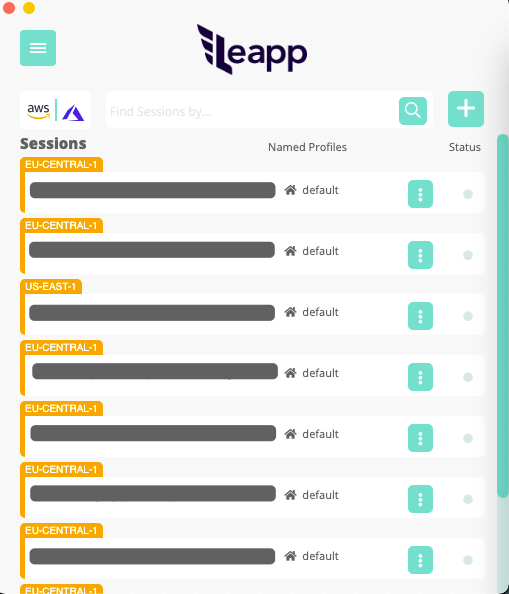
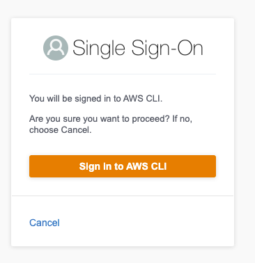
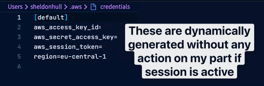
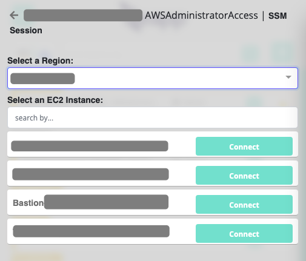

Security can add overhead, get in the way, complicate development, generally can cause challenges to development efforts.
The balance of security and usability is one that all development organizations have to deal with.
I could be ultra-secure by requiring carrier pigeon multi-factor authentication for my team, but I'm not sure that would be well received.
It's also critical and the responsibility of each developer, not just the security team.
Let's take a few simple examples where a local developer can compromise security in AWS by simply taking an easy path.
- Builds a docker container and uploads to Docker Hub, for a generic tool, but includes embedded AWS credentials for a linter in it.
- Uses IAM long-lived keys to use a tool to generate infrastructure as code and commits these to the repository due to not excluding the
.env file in the .gitignore.
- Uses IAM access keys that are highly privileged as the easy path (over narrowing permission scope), puts these in a vendor site that integrates with AWS, and forgets about it.
Vendor has data compromised and the AWS keys are exposed.
There are so many ways that using long-lived IAM credentials can be abused.
It's recommended to use Role Assumption instead of IAM Access keys when possible.
This means all the tooling will leverage AWS Security Token Service and use short-lived ephemeral scoped credentials.
This limits both the blast radius and time of any compromise.
The problem with this path, is one of effort.
- If using AWS SSO: You'd have to
- login to your portal
- open target account section
- get programmatic credentials for the account
- paste them into your
~/.aws/credentials file
- If not using SSO, you'd have to use the CLI or appropriate sdk to generate your credentials on demand and then set.
The key is that all of these approaches aren't easy as the default.
It's easier to just use an IAM key and move on rather than battle with cli, sdks, and other options.
Tools like aws-vault are fantastic in helping with this, but aren't intuitive, work the same way in different platforms, and overall still provide a barrier to making it the easiest path.
🚀 Leapp - One step away from your Cloud

I came across this app by chance back in March when I was just starting at my new job at $Work and was looking for a tool to help simplify things over aws-vault.
Since I was benefiting from AWS SSO, I was looking for a way to simplify switching roles with SSO, while still maintaining compatibility with the lowest common denominator of the lowly ~/.aws/credentials file that I knew worked with Terraform, PowerShell, and other tools equally.
The result? Shipped code on day 3!
Leapp allows the path of least resistance to best practices with AWS Credentials (as well as Azure).
With AWS SSO, you get the benefit of the portal accounts automatically populated as well. Role assumption becomes the easy path.
In my scenario, using AWS SSO provides a more complicated route that demonstrates the ease of use.
- Open App
- Click on Account & Role I want to assume, say "Dev Account - AWS Admininstrator"
- Pop-up for SSO process using whatever SSO process is setup
- Enter name and password
- Enter MFA
- Auth dialogue proceeds to confirmation screen of signing in CLI

The result:
~/.aws/credentials has the [default] profile containing my STS credentials. This token rotates every n minutes producing ephemeral credentials.

The 0.6.0 release that should be out by Jun 30th (I'm using pre-release preview) contained some nice enhancements to this.
In prior versions, [default] profile was just replaced with whatever account you selected.
Now, named profiles are supported as well, so you could have multiple assumed roles open at the same time for calling with named profiles.
There's a built-in session launcher, allowing searching of EC2 instances and the instance terminal launch of an aws ssm start-session command against the target.

The future for Leapp is an interesting question.
They are active in engaging for feedback, so this is built with actual user feedback, not in a bubble.
I had an hour call with one of the developers talking about authentication approaches that helped me appreciate how much they want to engage their uses in a true Agile development pattern.
Not only did I learn a bunch, but ended up being able to provide a few ideas for future consideration.
Great discussion with @andreacavagna01.
Give Andrea a follow on :(fab fa-twitter): twitter and :(fab fa-github): GitHub!
I can see a larger market than developers if a company rolled it out to users, as it would simplify access by analysts, developers, security team members, and others.
It's not:
- An "essential" service
- "Necessary" in a strict sense, because things work fine without this tool.
Instead it offers:
- A usability improvement to developers authentication workflow.
- The easy path is a secure path
For this reason, I'm interested to see how adoption by enterprises and organizations will occur.
I've observed that solving painpoints can both incentive a company if painful enough to adopt new approaches, but also bypass improvements as they aren't "essential" and things already work, albeit unoptimally.
For me, I'm adding it to my AWS essentials, since now I can just focus on work without and improve my credentials handling without it intruding.
I'll continue recommending this to folks, and keep up with what improvements continue to be released from this team.
Keep up with the Leapp roadmap here: GitHub Leapp Roadmap